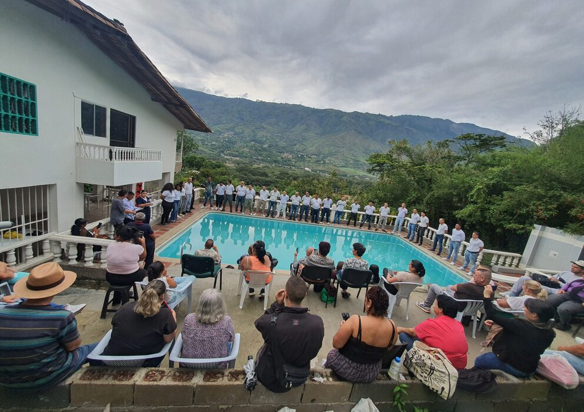

HISTORIA DE LA ADICCION EN COLOMBIA
La historia de la adicción en Colombia está estrechamente ligada a los cambios sociales, políticos y económicos del país, así como a su posición geográfica, que la ha convertido en un punto clave para el tráfico de drogas. A continuación, se presenta un resumen de los hitos más relevantes:
Época Precolombina y Colonia
Uso tradicional de plantas psicoactivas: Antes de la llegada de los españoles, las comunidades indígenas utilizaban plantas como la coca y el yagé con fines rituales, medicinales y espirituales. Estas prácticas continuaron durante la Colonia, aunque fueron reprimidas por las autoridades españolas.
Siglo XIX y principios del XX
Consumo moderado y medicinal: Durante el siglo XIX y principios del XX, el consumo de sustancias como el alcohol y el tabaco era común, pero no se consideraba un problema social grave. La cocaína, por ejemplo, se usaba con fines medicinales.
Mediados del siglo XX
Inicio del narcotráfico: En las décadas de 1960 y 1970, Colombia comenzó a ser un actor importante en el tráfico internacional de drogas, especialmente de marihuana. La demanda de drogas en Estados Unidos y Europa impulsó el cultivo y la exportación ilegal.
Aparición del consumo problemático: Aunque inicialmente el consumo interno era bajo, el aumento del tráfico llevó a un incremento en el uso de drogas como la marihuana y la cocaína entre la población colombiana.
Décadas de 1980 y 1990
Expansión del narcotráfico y violencia: Colombia se convirtió en el principal productor de cocaína del mundo, liderado por carteles como el de Medellín y Cali. Este periodo estuvo marcado por una violencia extrema, corrupción y el fortalecimiento de grupos armados ilegales.
Aumento del consumo local: El acceso a las drogas se incrementó, y con ello, los problemas de adicción. El basuco (una forma de cocaína fumable) se popularizó entre los sectores más vulnerables, generando una crisis de salud pública.
Siglo XXI
Políticas de lucha contra las drogas: Colombia ha sido un aliado clave en la "guerra contra las drogas" liderada por Estados Unidos, con políticas centradas en la erradicación de cultivos y la interdicción del tráfico. Sin embargo, estas medidas no han reducido significativamente el problema de las adicciones.
Cambio de enfoque: En años recientes, ha habido un mayor énfasis en abordar el consumo de drogas como un problema de salud pública, con programas de prevención, tratamiento y reducción de daños.
Nuevas sustancias: Además de las drogas tradicionales, ha surgido el consumo de sustancias sintéticas y medicamentos de uso recreativo, lo que plantea nuevos desafíos.
Desafios actuales
Estigmatización y falta de acceso a tratamiento: Aunque ha habido avances, persisten barreras culturales y económicas para que las personas con adicciones reciban atención adecuada.
Conexión con el conflicto armado: El narcotráfico sigue financiando a grupos armados ilegales, lo que dificulta la solución integral del problema.
Debate sobre políticas de drogas: Hay un creciente debate sobre la necesidad de enfoques alternativos, como la regulación de ciertas sustancias y la descriminalización del consumo.
Conoce estadisticas sobre la adicción
HISTORIA DE LAS FUNDACIONES DE REHABILITACION EN COLOMBIA
La historia de las fundaciones de rehabilitación de adicción a drogas en Colombia está estrechamente ligada al contexto social y político del país, marcado por el narcotráfico, la violencia y el consumo de sustancias psicoactivas. A continuación, se presenta un resumen de su evolución:
Inicios (Década de 1970-1980)
Durante las décadas de 1970 y 1980, el consumo de drogas en Colombia comenzó a aumentar, especialmente en las grandes ciudades como Bogotá, Medellín y Cali. Este fenómeno estuvo relacionado con la expansión del narcotráfico y la disponibilidad de sustancias como la marihuana, la cocaína y, posteriormente, el bazuco (pasta base de cocaína). En este contexto, surgieron las primeras iniciativas de rehabilitación, impulsadas principalmente por organizaciones religiosas y comunitarias. Estas entidades ofrecían apoyo espiritual y emocional, basándose en principios cristianos y en la abstinencia total.
Consolidación (Década de 1990)
En la década de 1990, el problema del consumo de drogas se agravó debido a la violencia asociada al narcotráfico y al aumento de la pobreza y el desplazamiento forzado. Durante este período, se consolidaron varias fundaciones y centros de rehabilitación, tanto públicos como privados. Algunas de las más reconocidas incluyen:
Fundación Hogares Claret: Creada en 1985, se enfocó en la rehabilitación de jóvenes con problemas de adicción.
Fundación Saldarriaga Concha: Aunque su enfoque principal no era exclusivamente las adicciones, contribuyó con programas sociales que incluían la rehabilitación.
Centros de Atención al Drogadicto (CAD): Implementados por el gobierno, estos centros ofrecían tratamiento ambulatorio y residencial.
Expansión y profesionalización (Década de 2000)
A partir del año 2000, las fundaciones de rehabilitación comenzaron a adoptar enfoques más profesionales y científicos, incorporando terapias psicológicas, médicas y psiquiátricas. Organizaciones como la Fundación Libérate y la Fundación Amor y Convivencia se destacaron por su trabajo en la prevención y tratamiento de adicciones. Además, el gobierno colombiano, en colaboración con organismos internacionales, implementó políticas públicas para abordar el problema de las drogas desde una perspectiva de salud pública.
Enfoque actual (Década de 2010 en adelante)
En los últimos años, las fundaciones de rehabilitación han adoptado un enfoque más integral, considerando no solo la adicción como un problema individual, sino también sus dimensiones sociales y familiares. Se han promovido programas de prevención en colegios y comunidades, así como tratamientos basados en evidencia científica. Además, se ha dado mayor importancia a la reinserción social de las personas rehabilitadas, ofreciendo apoyo en educación, empleo y salud mental.
Desafíos actuales
A pesar de los avances, las fundaciones de rehabilitación en Colombia enfrentan desafíos como la falta de recursos económicos, la estigmatización de las personas con adicciones y la persistencia del narcotráfico. Sin embargo, su labor sigue siendo fundamental para combatir este problema y mejorar la calidad de vida de miles de colombianos.
Conoce estadisticas sobre las fundaciones
- 
-

HISTORIA DE LAS EMPRESAS EN MEDELLIN
La historia de las empresas en Medellín, Colombia, está marcada por una evolución que refleja el desarrollo económico, social y cultural de la ciudad. Desde sus inicios como un pequeño poblado hasta convertirse en uno de los centros industriales y empresariales más importantes del país, Medellín ha sido escenario de emprendimiento e innovación. A continuación, se presenta un resumen de su trayectoria:
Época colonial y siglo XIX
Durante la época colonial, Medellín era un pequeño asentamiento dedicado principalmente a la agricultura y la minería. La economía se basaba en la producción de oro y en cultivos como el maíz y la caña de azúcar. Sin embargo, no fue hasta el siglo XIX que comenzaron a surgir las primeras empresas formales, especialmente en los sectores textil y tabacalero. La creación de la Compañía Antioqueña de Tejidos en 1904 marcó un hito, convirtiéndose en una de las primeras fábricas textiles del país y sentando las bases para el desarrollo industrial de la región.
Siglo XX: Industrialización y crecimiento
El siglo XX fue un período de transformación para Medellín, que se consolidó como el epicentro industrial de Colombia. Varios factores contribuyeron a este crecimiento:
Industria textil: Empresas como Fabricato, Coltejer y Tejicóndor se convirtieron en líderes nacionales e internacionales en la producción de telas y confecciones.
Siderurgia y metalurgia: La creación de Siderúrgica de Medellín (Simesa) en 1954 impulsó el desarrollo de la industria pesada
Comercio y servicios: Surgieron grandes almacenes como Almacenes Éxito (fundado en 1949), que revolucionaron el comercio minorista en el país.
Además, durante este período se destacó el papel de los empresarios antioqueños, conocidos por su espíritu emprendedor y su capacidad para crear conglomerados empresariales.
Década de 1980-1990: Crisis y reinvención
La década de 1980 fue un período difícil para Medellín debido a la crisis económica nacional, el auge del narcotráfico y la violencia asociada. Muchas empresas enfrentaron desafíos, pero también surgieron oportunidades para la reinvención. Durante esta época, se fortalecieron sectores como la construcción, el comercio y los servicios financieros. Además, se crearon organizaciones como Proantioquia, que promovieron el desarrollo empresarial y social de la región.
Siglo XXI: Innovación y globalización
En el siglo XXI, Medellín se ha consolidado como un hub de innovación y emprendimiento. La ciudad ha sido reconocida internacionalmente por su transformación social y económica, gracias a iniciativas como:
Parque Explora y Ruta N: Centros de innovación y tecnología que fomentan la creación de empresas de base tecnológica.
Clústeres empresariales: Se han desarrollado clústeres en sectores como energía, salud, construcción y turismo, promoviendo la competitividad regional.
mpresas líderes: Compañías como Grupo Sura, Grupo Nutresa, Bancolombia y Argos se han expandido a nivel internacional, representando a Medellín en el mundo.
Desafíos actuales
A pesar de los avances, las empresas en Medellín enfrentan desafíos como la desigualdad social, la competencia global y la necesidad de adaptarse a las nuevas tecnologías. Sin embargo, la ciudad sigue siendo un referente de resiliencia y emprendimiento en Colombia.
Conoce estadisticas sobre las empresas